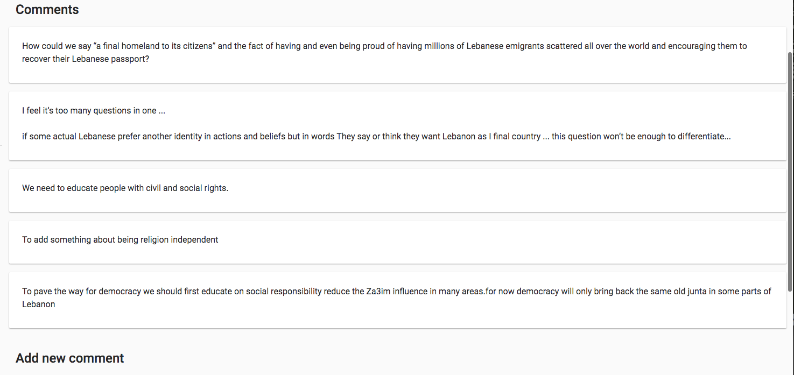

Agenda
Presentation Shared with you before the meeting
Q&A (40 minutes) | The meeting will end automatically, I will share another link.
If after the presentation you have a question, please use the form provided in the Whatsapp Group to submit it, this will help us gain time.
One Year Earlier...
Like many of you, we are Lebanese that took to the streets to revolt against this corrupt system. We all started the Revolution with friends and family.
After a while, we found ourselves in different revolutionary groups, with people that we just met, through street demonstrations and/or meetings, and with whom we have built “some trust”.
The circles continued to grow and multiply until we found ourselves unable to progress and achieve.
Some tried to engage with the opposition independent parties and groups that were present at the outbreak of the Revolution.
But, most of the time the experience was not pleasant, for different reasons.
As a result, with more people involved in Public Affairs, "New Groups" started to emerge.
Even, the "Regime" started having their own "Revolutionary Groups".
Meanwhile, as individuals...
We did not know what and who to trust
We did not know what is fake and what is true
We did not know what is next
We started asking for "Leaders"
Some went back to try to save their businesses
Others lost their jobs and their income
Many are facing the unknown
While groups were suffering from... (1/2)
... the very fast pace of the events
... the lack of Visibility and plans
... the lack of direction
... the lack and refusal of organization
While groups were suffering from... (2/2)
... the low level of trust
... the lack of commitment
... the generational conflict
... the discrepancies within the same group
... the lack of experience in political and collective work
But most importantly, the refusal to talk about the Future.
The "Revolution" was calming down, silently.
Few months later, Corona arrived...
The pace of events slowed down.
There were on and off protests, with very few numbers.
* Those people kept it alive for us
The first thing they took out was the "SQUARES".
* Where the Magic was happening.
A lot of webinars got organized.
* About a lot of topics.
Revolutionary cells turned into Crisis Management mode and activated Humanitarian work.
* Needed and necessary.
We started hearing that Alliances, Coalitions and Fronts are being formed.
* But nothing concrete and trangible.
And of course, "New Groups" kept on emerging.
* ... more "political papers" were written.
But still...
... no one wanted to talk about, or plan for the Future.
... no one wanted to get organized.
... everybody was talking about the Horizontal Structure but without Structure without Organization without Collaboration and without Online Collaboration without Transparency without Responsibility without Sharing without all the essentials for a Horizontal Strucutre to function
Few months later, AUGUST 4...
On top of everything else, the explosion happened!
We got angry...
... and again, we thought that this is it...
... but again, nothing happened!
Revolutionary Groups got busy with the crisis management of the explosion.
And things accelerated, and what was being cooked slowly in the background, started to emerge.
More Political Papers...
More Groups...
More Coalitions, Alliances, Political Fronts.
A year later, OCTOBER 17...
The Mass did not engage
The Mass did not participate
The Mass was expecting "Solutions", "Announcements",...
... and again, nothing happened!
On the contrary...
We started hearing about "issues" and "problems" between groups...
And of course...
More Political Papers...
More Groups...
Today
The Mass still do not have visibility
The Mass still do not know what is the plan
The Mass still did not find the desired "Political Alternative(s)" who will "save us"
The Mass do not see the light at the end of the tunnel
Why the Vision, Values and Principles?
We cannot achieve without Organization.
We cannot Organize without Planning.
We cannot Plan without a Vision.
How can it help us?
by getting to know and understanding each other, and establishing a direction.

by opening an uninterrupted dialogue.
It will also allow us to compare all Political parties and groups based on one benchamrk.
Instead of each one of us reading hundreds of political papers.
This is an invitation to reflect together.
Did you do your own retrospective for the past year?
How does your experience compare to mine?
Do you relate?
What can you tell others?
Q&A around the retrospective (40 minutes)
Keep your questions restricted to the Retrospective topic, we will talk about "What is the Project" during our next session.
Keep yourself muted, I will give the turn.
If you have a question, please use the "Raise your hand", I will give the turn.
Intervention Duration: a maximum of 3 minutes. Please stick to 3 minutes and under
Do not interrupt anyone
Remember, your questions will help us improve everything we are doing. We might not be able to take all questions due to time resitriction. Please use the provided form in the Whatsapp group to submit your question.